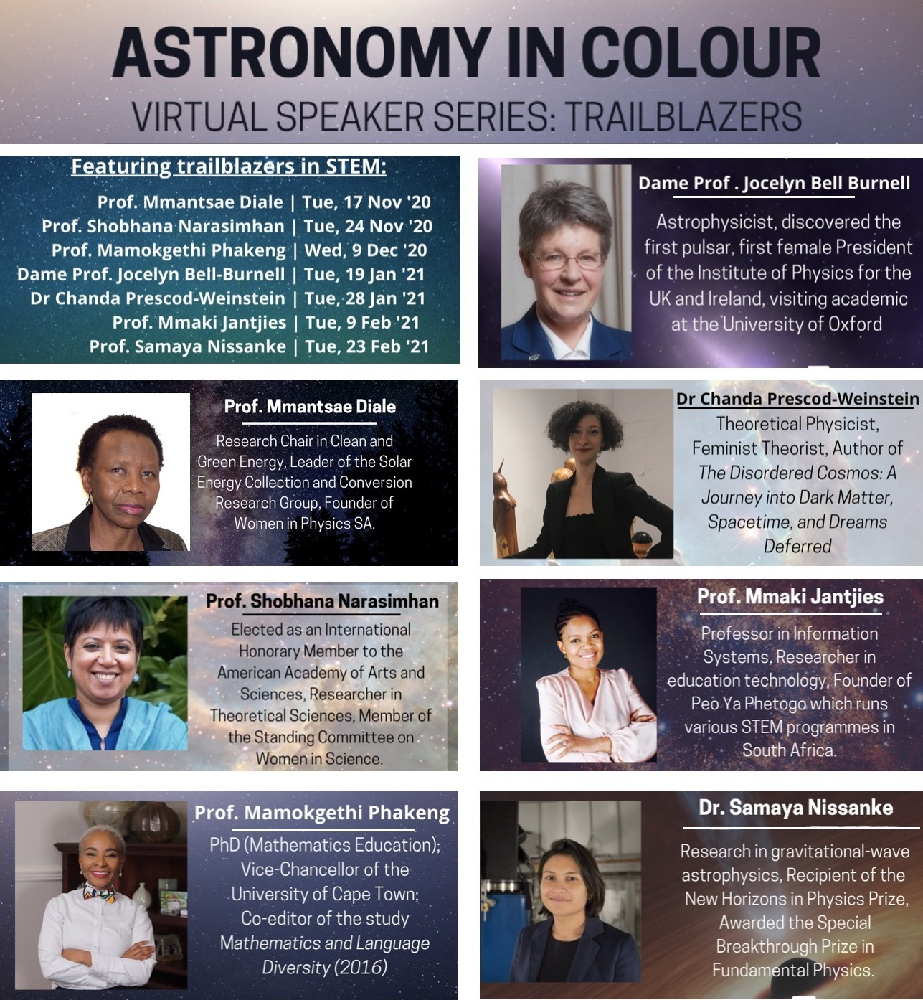
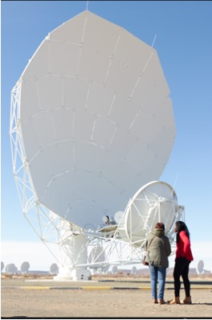
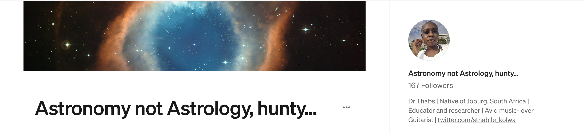

Outreach
In my duty and service to the public as a scientist, I set aside time for hands-on involvement in projects and initiatives that encourage the young to develop their potential and build skills that will lead them to careers in STEM. I am also interested developing creative ways of communicating science to the public through high-tech, the visual arts, story-telling and song.
Astronomy in Colour
As a member of the Astronomy in Colour collective, I am involved in activities that aim to inspire young audiences to become motivated in pursuing a life of science.
One such activity was the Trailblazers Speaker Series which featured talks adn Q&A sessions from established and esteemed women scientists and academics. I was involved in organising and co-chairing two of the seminars in this event during the height of the pandemic in November 2020 to February 2021. The virtual series was received with much praise and appreciation by participants from all over the world. Recordings of the Trailblazers Speaker Series have been posted on YouTube for posterity. You may find the video recordings at this link.

Public Talks and Science Communication
I have given public talks at the South African Astronomical Observatory (recorded) and the MeerKAT radio telescope site in Carnarvon. On the 5th July 2023, I gave a short public talk at the SARAO Open Day and walked about the MeerKAT Radio Telescope site with the visiting group, taking questions about Universe and sharing jokes.
I occasionally write public / popular science articles on the freelance writer's website, Medium. My page is cheekily titled Astronomy Not Astrology, hunty because it combines two of my greatest loves in life - Astronomy and RuPaul's Drag Race. My articles highlight recent discoveries in astronomy that are noteworthy, intriguing, unusual or remarkable.
